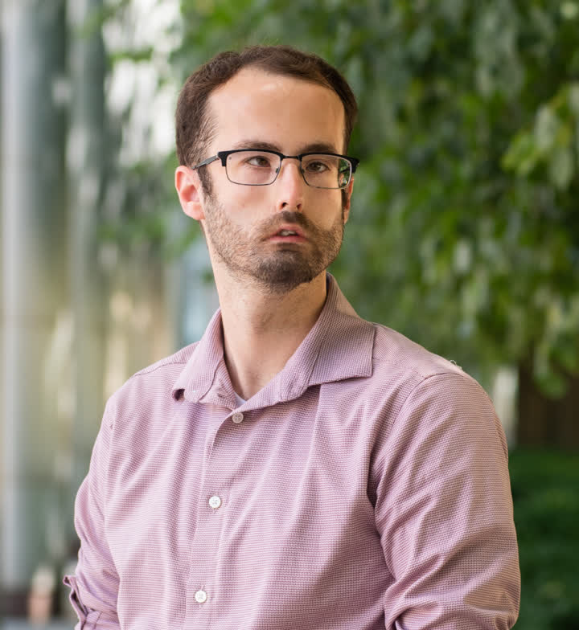

▽ Trailhead · elev. 60 m · the widest view
Predict. Control. Cure.
Exploring the genetic and ecological factors driving antibiotic resistance — and pioneering new technologies to design effective, evolution-inspired therapeutic strategies.
Kyle Card, Ph.D. · HHMI Hanna H. Gray Postdoctoral Fellow
△▽ Stop 01 · the central question
Can we read evolution
before it happens?
I am dedicated to understanding and combating antibiotic resistance. My research combines experimental evolution, functional genomics, and computational modeling to identify the genetic and environmental factors that drive resistance — to predict and guide the evolutionary trajectories of pathogens, and ultimately improve treatment outcomes.

△△▽ Stop 02 · discovery · elev. 980 m
History matters.
A population's past quietly decides which peaks it can still reach.
As an HHMI Gilliam Fellow, I investigated how a bacterium's prior history influences its ability to evolve antibiotic resistance. Using E. coli strains from the Long-Term Evolution Experiment, we found that genomic differences between lines can unpredictably alter resistance — and channel evolution down particular mutational pathways.